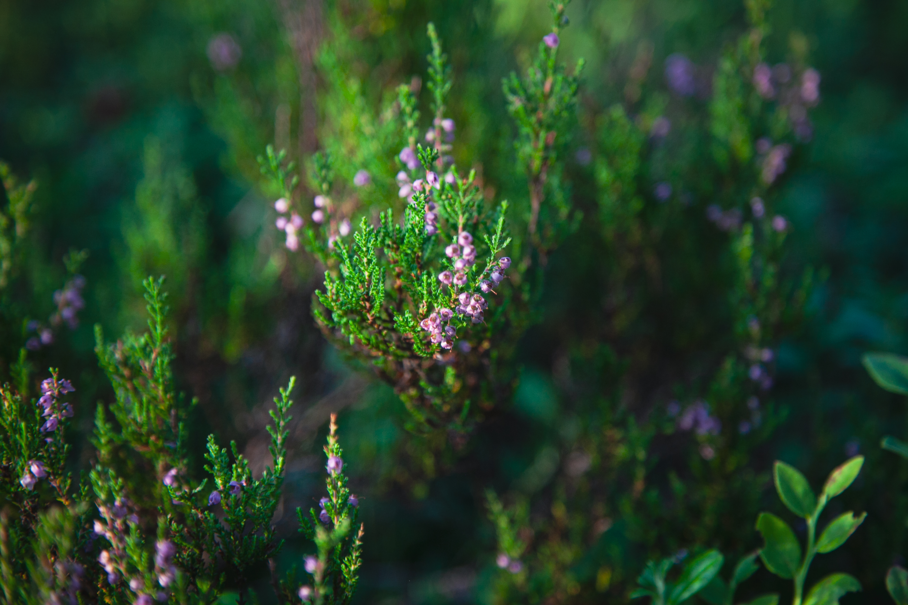
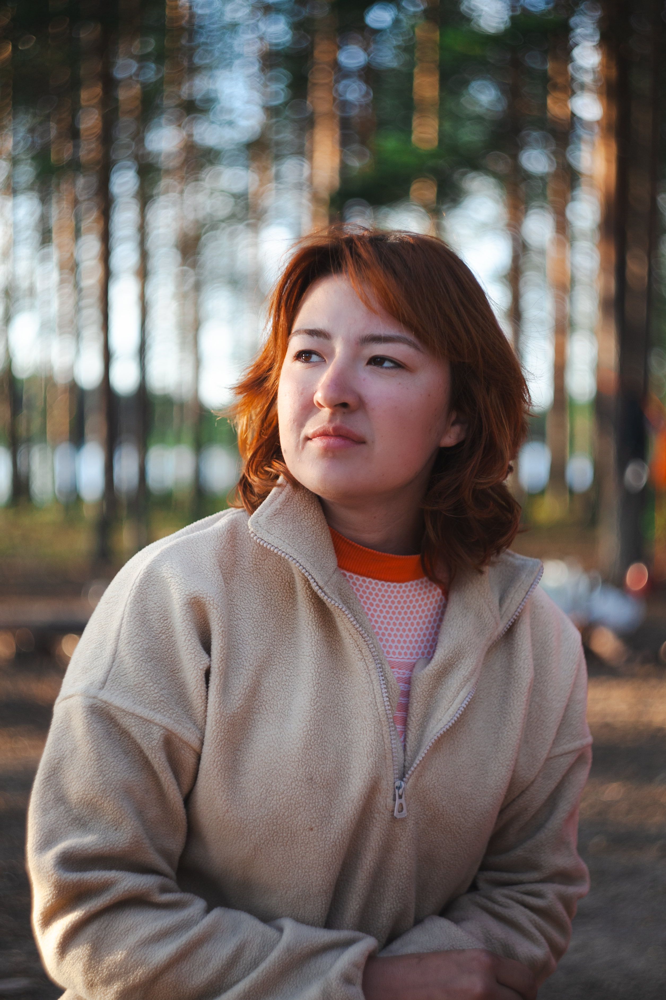
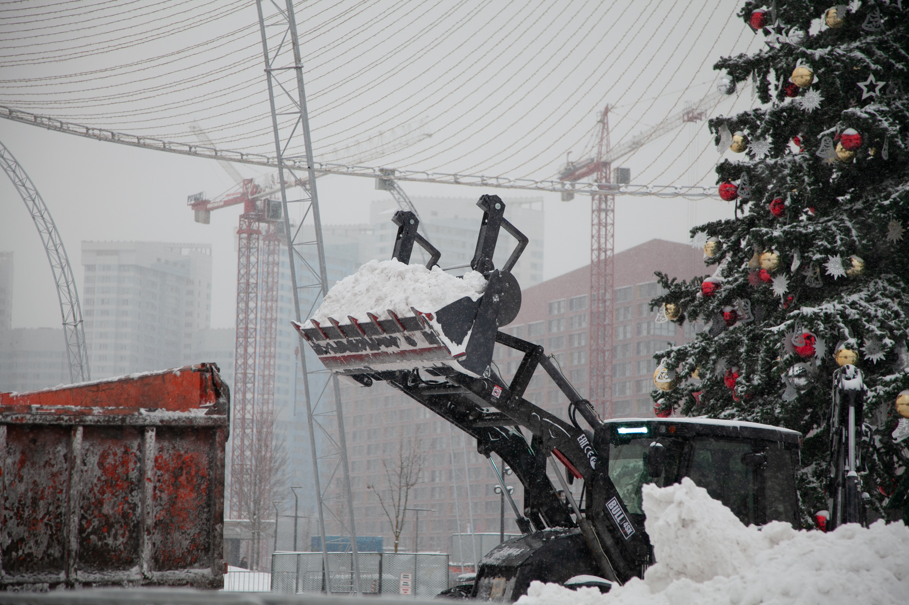
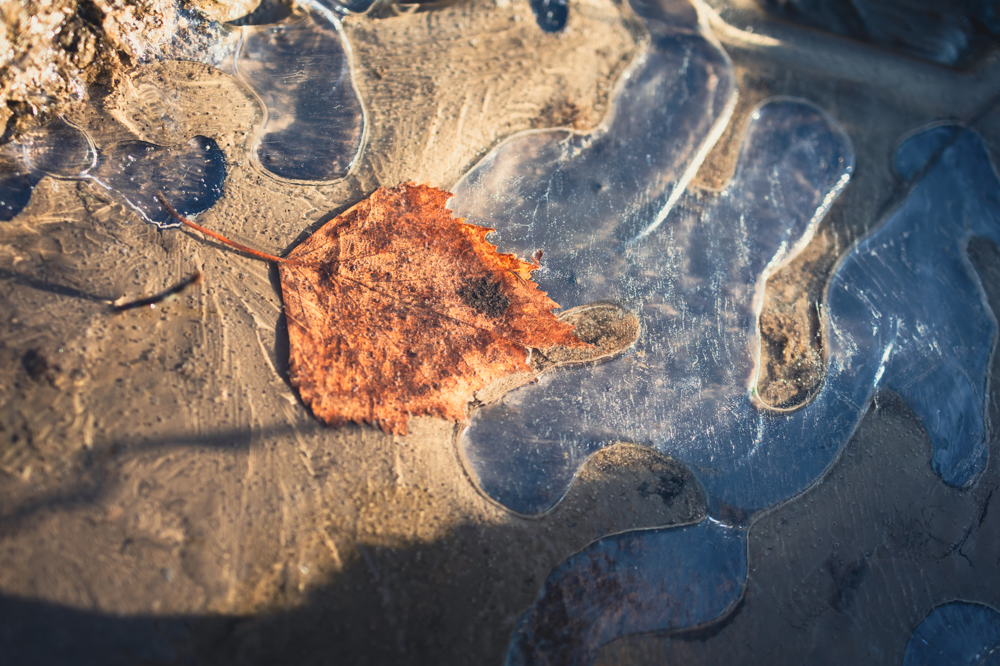
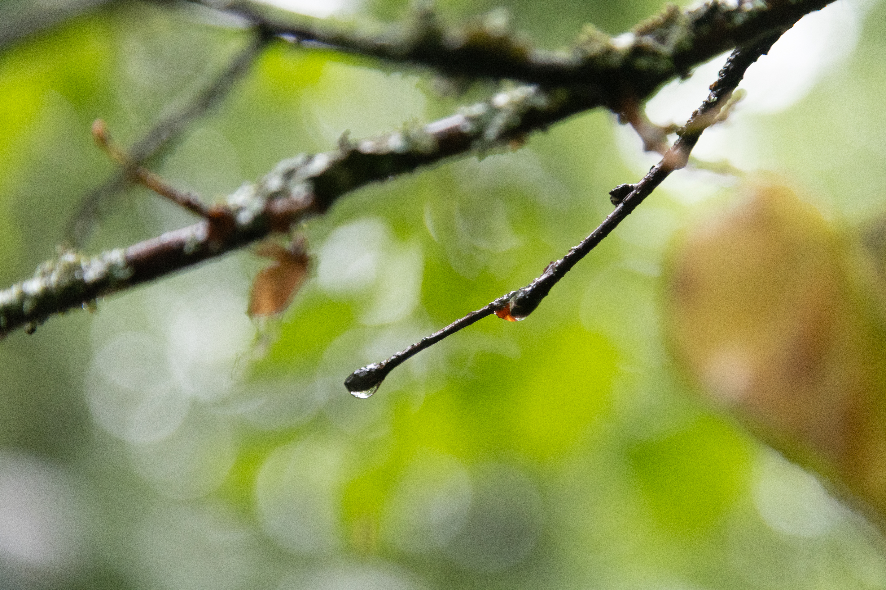
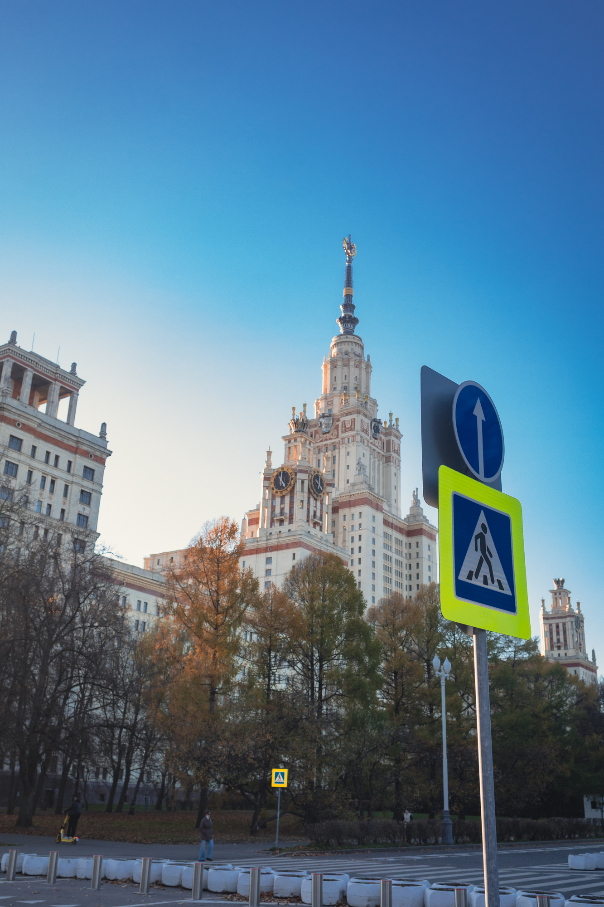
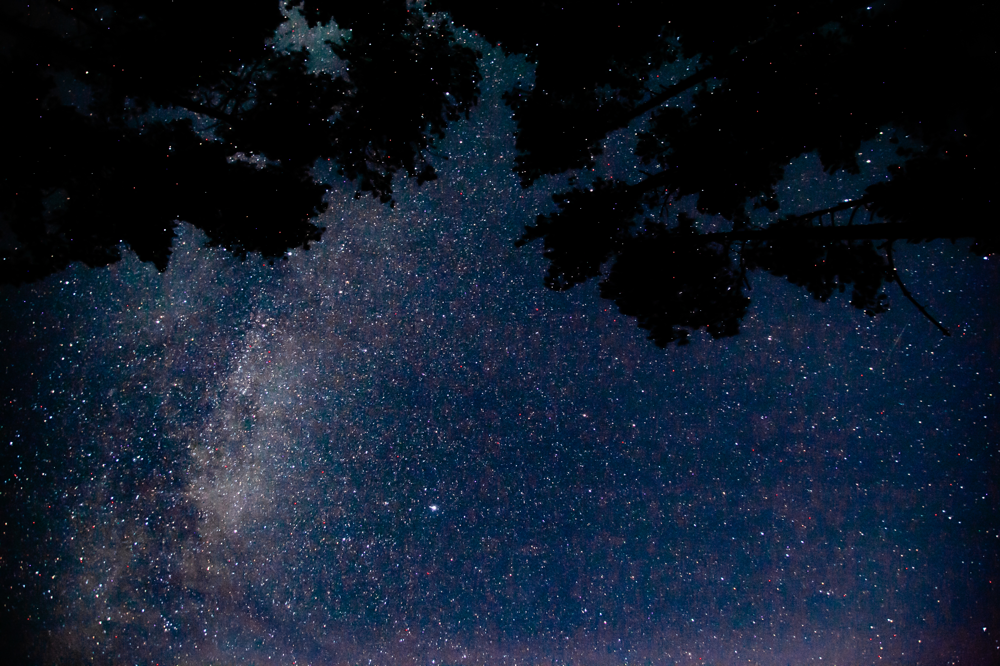
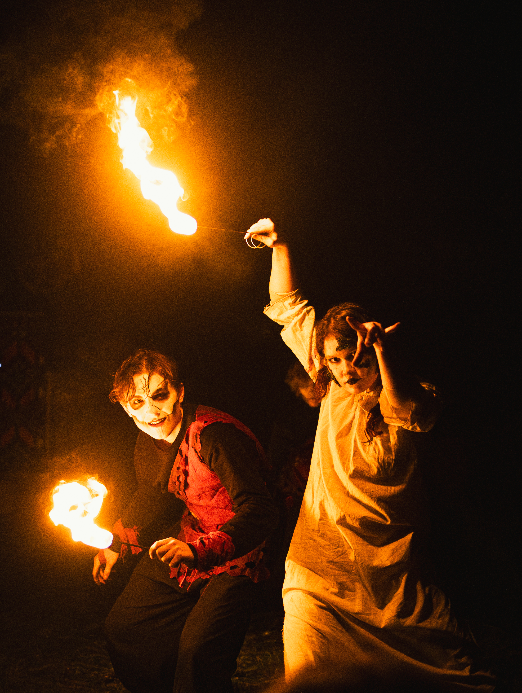
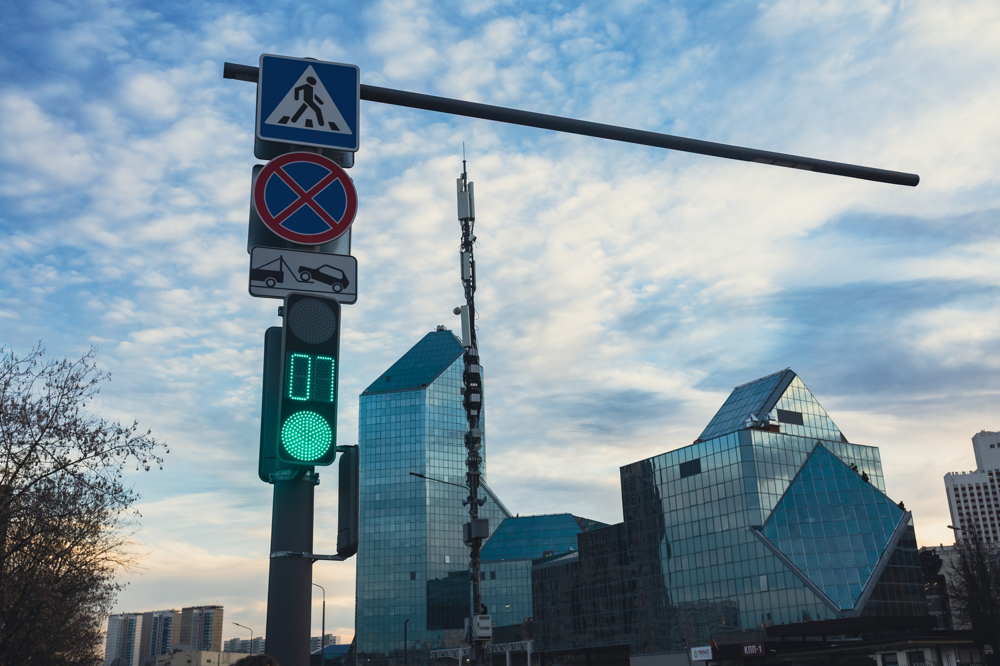
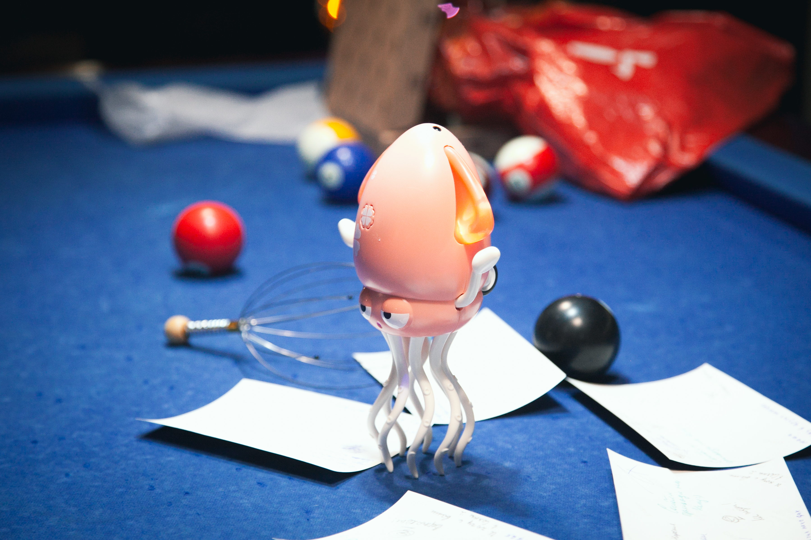

На главную
Искусство в каждом кадре
Фотогалерея
Каждая фотография — это отдельная история, рассказанная с помощью света, цвета и композиции.
Исследуй разные жанры и художественные приёмы, вдохновляйся образами и замечай красоту в окружающем мире.
Коллекция снимков
Мир через объектив
Показано фотографий: 12










Продолжить изучение
Узнай, как создаются выразительные кадры
Изучи композицию, освещение и приёмы, которые помогают фотографу воплотить творческий замысел.
Изучить композицию